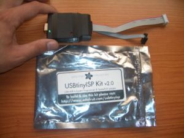
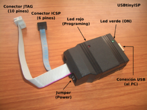
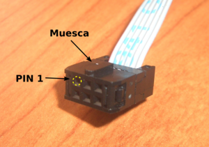
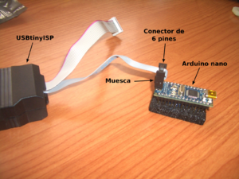
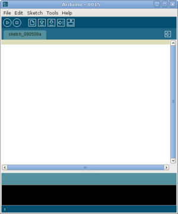
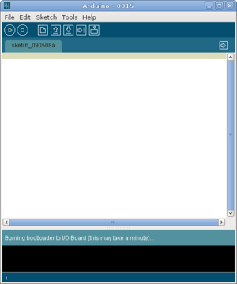
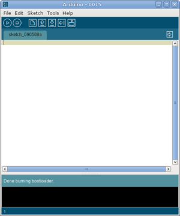
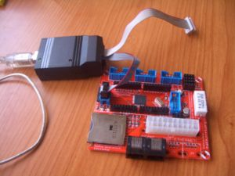

El grabador de AVRs USBtinyISP permite programar la memoria flash de los micros AVR de atmel. Se conecta al PC a través del USB. Es hardware libre, por lo que están disponibles todos sus esquemas.
Este grabador se lo puede construir uno mismo desde cero o bien lo puede comprar como un kit para montar. Nosotros recibimos ese kit al comprarnos la impresora 3D CupCake (Una versión más pequeña de RepRap).

Las distintas partes del grabador son:
La programación normalmente se hará usando el conector de 6 pines. La muesca indica la orientación del cable. En algunas placas, este conector se puede conectar en dos orientaciones. Para saber cuál es la correcta hay que fijarse en dónde está el pin 1 del conector. En las siguientes figuras se muestra un ejemplo de conexión a un Arduino nano, para su programación:
| 
Conector ICSP de 6 pines (src) |

Programación de un Arduino nano (src) |
El USBtinyISP es multiplataforma (Linux, Mac, Windows). Un software para su utilización, en línea de comandos, es el AVRDUDE
El AVRDude está disponible en los repositorios oficiales de Debian. Instalación:
$ sudo apt-get install avrdude
Lo normal es que este grabador nos lo construyamos a partir del kit, soldando los componentes electrónicos en la placa de circuito impreso. Una vez construida, para probarla seguir los siguientes pasos:
$ dmesg [...] usb 3-2: new low speed USB device using uhci_hcd and address 11 usb 3-2: configuration #1 chosen from 1 choice usb 3-2: New USB device found, idVendor=1781, idProduct=0c9f usb 3-2: New USB device strings: Mfr=0, Product=2, SerialNumber=0 usb 3-2: Product: USBtiny
$ sudo avrdude -c usbtiny -p m168 avrdude: AVR device initialized and ready to accept instructions Reading | ################################################## | 100% 0.01s avrdude: Device signature = 0x1e9406 avrdude: safemode: Fuses OK avrdude done. Thank you.
Este comando no graba nada. Simplemente accede al micro y lee su configuración.
NOTA 1: Se ha ejecutado con sudo para tener privilegios de root. Si se ejecuta como un usuario normal se obtendrá lo siguiente:
$ avrdude -c usbtiny -p m168 avrdude: error: usbtiny_transmit: error sending control message: Operation not permitted
NOTA 2: Si el grabador no está conectado o se ha soldado incorrectamente, se obtendrá el siguiente mensaje de error:
$ sudo avrdude -c usbtiny -p m168 avrdude: Error: Could not find USBtiny device (0x1781/0xc9f)
La grabación del Bootloader se realiza desde el entorno de programación del Arduino.
$ sudo ./arduino
El entorno arrancará y se verá el pantallazo de la figura 1. Enchufar el grabador al USB. No olvidar conectar el jumper de alimentación.
La grabación del Bootloader comienza (fig 2). Se enciende el led rojo del grabador, y el verde se apaga. Al cabo de aproximadamente un minuto, la grabación termina (fig. 3), el led rojo se apaga y el verde se vuelve a encender. El micro ya tiene el Bootloader cargado.
| 
Fig. 1: El entorno de arduino nada más ejecutarlo |

Fig. 2: Grabación del Bootloader en proceso |

Fig. 3: Grabación del Bootloader finalizada |

La Placa madre de Reprap (v1.1) está basada en Sanguino. Para descargar el Bootloader hay que instalar primero el entorno de Arduino y luego añadir las extensiones para Sanguino. Ese trabajo de unificación lo hemos realizado para la versión Arduino 0015.
$ sudo ./arduino
El entorno arrancará y se verá el pantallazo de la figura 1. Enchufar el grabador al USB. No olvidar conectar el jumper de alimentación.
La grabación del Bootloader comienza (fig 2). Se enciende el led rojo del grabador, y el verde se apaga. Al cabo de aproximadamente un minuto, la grabación termina (fig. 3), el led rojo se apaga y el verde se vuelve a encender. El micro ya tiene el Bootloader cargado.
Al terminar la carga, el led rojo de DEBUG emitirá unos cortos destellos. Esto también ocurrirá cada vez que se apriete el botón de reset de la placa. Así podemos saber si el Bootloader está cargado.